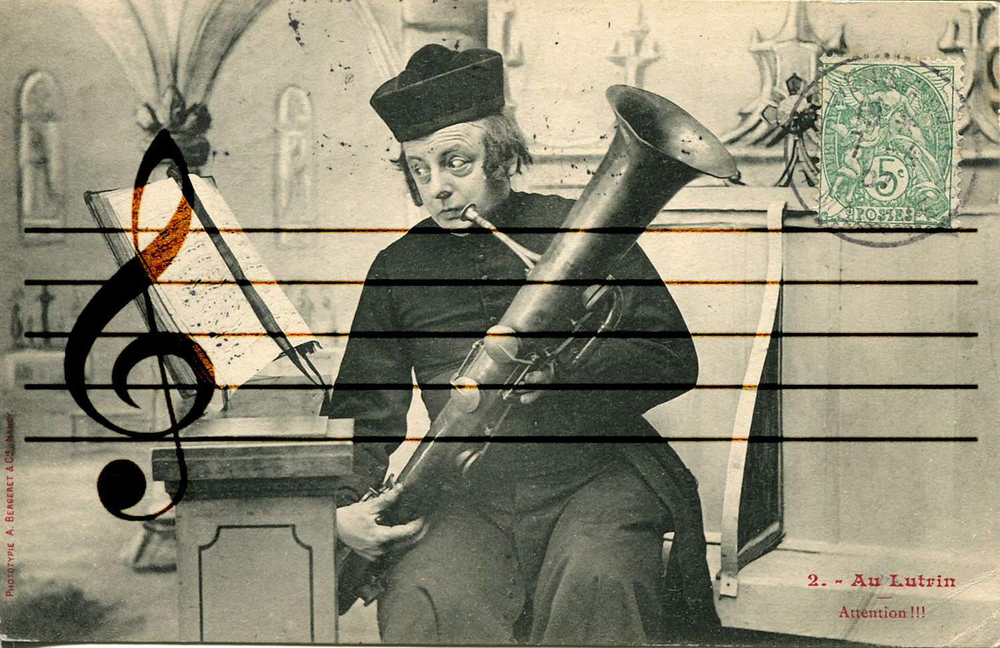
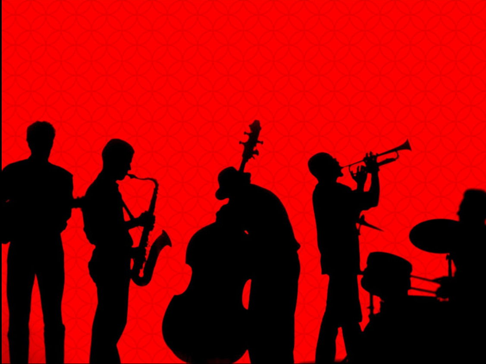
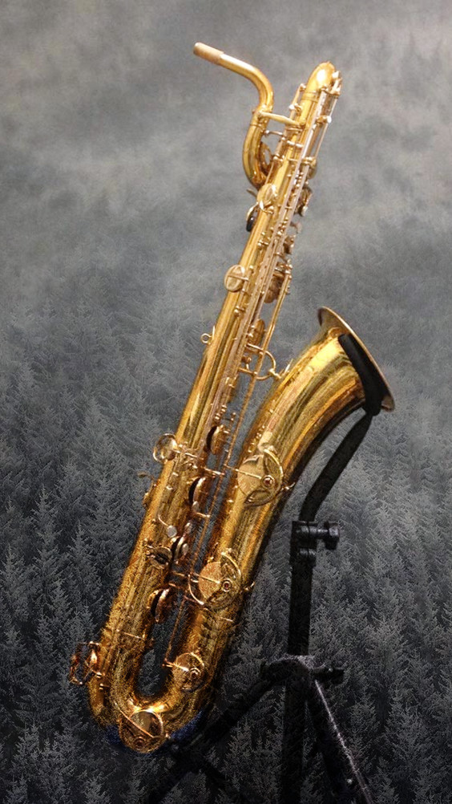
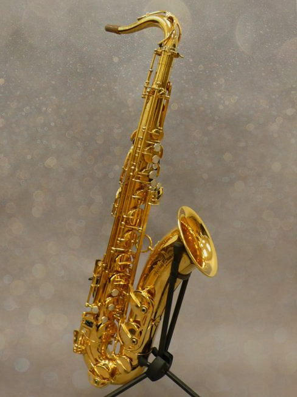
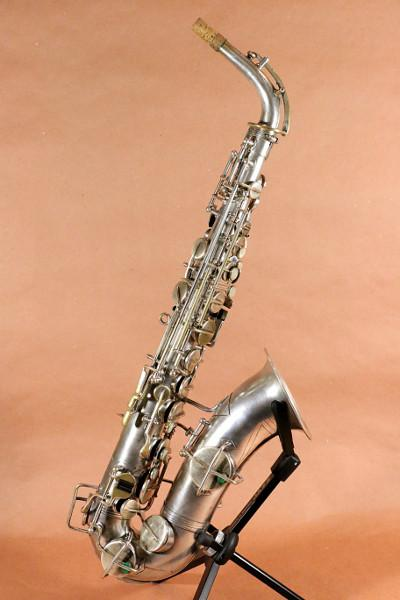
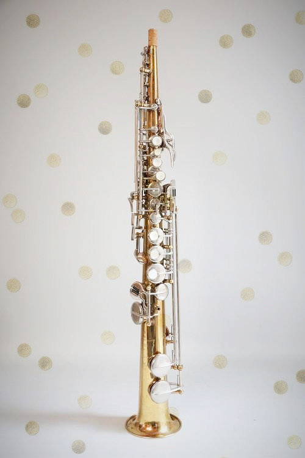
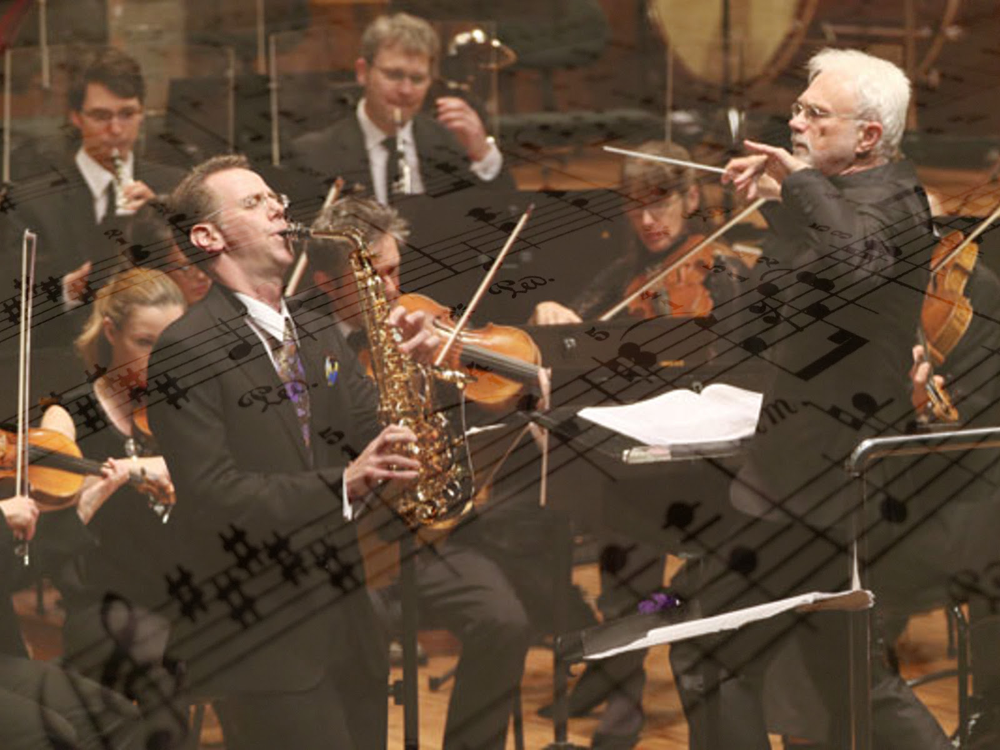

Hi!
The Inventor, invented saxophone in 1840

Adolf wants to create an instrument that's more flexible than an ophicleide
Saxophone plays an important role when Jazz came out in the 1960s
Baritone sax is a rare type. Its volume is nearly two times of a tenor sax. Sounds like cello.
Tenor sax has a bend on the neck part. It has a gentle tone and is usually a supporting role.
Alto sax is the most representative among the saxophone family. Widely used in classical solos and ensembles.
Compare to clarinet, soprano sax has a larger volume and a clearer voice. The instrument itself is commonly straight.
In the 20th and 21st centuries, the saxophone found increased popularity in symphony orchestras and classical music.
Commonly used in jazz music, where it is one of the signature sounds, as well as an iconic image used to denote the style.
At the beginning of 1980s, most saxophonist, represented by an American performer and composer Kenny G, became active in pop music around the world